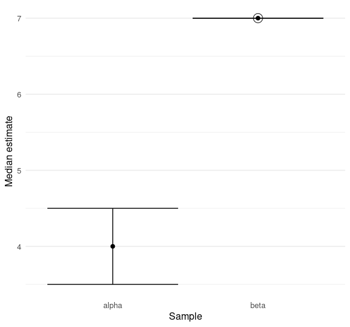
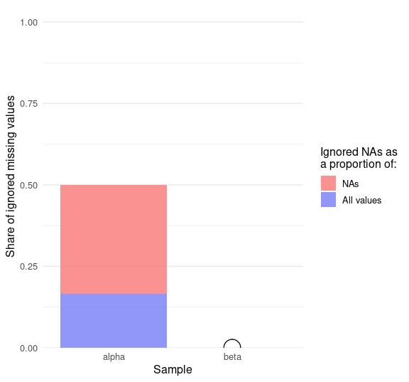

The goal of naidem is to compute the median in a way that handles missing values properly: checking whether NAs render the median unknown and quantifying uncertainty arising from them. It contains:
-
median2()as a drop-in replacement formedian(). It returnsNAif and only if the median can’t be determined from the data. -
median_table()to quantify uncertainty around a median estimate. It only ignores as manyNAs as needed, not simply all of them. The output includes the lower and upper bounds of the median, how manyNAs had to be ignored, etc. -
median_plot_errorbar()and other follow-up visualizations.
Installation
You can install the development version of naidem like so:
remotes::install_github("lhdjung/naidem")Get started
Base R’s median() function returns NA whenever the input vector contains one or more NAs. In many cases, missing values do make it impossible to compute the median. Yet some distributions have a clear median even so:
alpha <- c(3, 4, 4, 5, NA, NA)
beta <- c(6, 7, 7, 7, NA)
median(alpha)
#> [1] NA
median(beta)
#> [1] NAThe actual median of beta is 7, irrespective of the true value behind NA. Use median2() to distinguish between these cases:
Compare this to NA^0, which returns 1 even though NA^2 returns NA. This also makes NA more meaningful when it is returned: users can be sure that the median really is unknown. See Implementing the algorithm for more information on naidem’s solution.
What to do if the median really is unknown, like above? Call median_table() to get a sense of the uncertainty around the median of the known values:
df1 <- median_table(list(alpha = alpha, beta = beta))
df1
#> # A tibble: 2 × 10
#> term estimate certainty lower upper na_ignored na_total rate_ignored_na
#> <chr> <dbl> <lgl> <dbl> <dbl> <int> <int> <dbl>
#> 1 alpha 4 FALSE 3.5 4.5 1 2 0.5
#> 2 beta 7 TRUE 7 7 0 1 0
#> # ℹ 2 more variables: sum_total <int>, rate_ignored_sum <dbl>Visualize the lower and upper bounds of the median estimate using median_plot_errorbar():
median_plot_errorbar(df1)
The precise value of alpha is unknown, but it is bound to fall between the bars. Since the median of beta is known, its bars are not expanded, and it is marked as certain by a ring around its point.
Also, median_table() counts how many missing values need to be ignored to determine the median of the remaining values. This balances the need for knowledge about the central tendency with an appreciation of its uncertainty.
Make it apparent with median_plot_col(). No bars are shown for beta because its NA does not need to be ignored:
median_plot_col(df1)
About this package
“naidem” is “median” backwards, but it also expresses the goal of treating NA in the same (idem) conceptual way as R language primitives like ^ do. Note that naidem is not about imputation at all, but simply about determining the median.
The moder package serves a similar purpose, but for the mode instead of the median. Working on moder provided the impetus behind naidem.